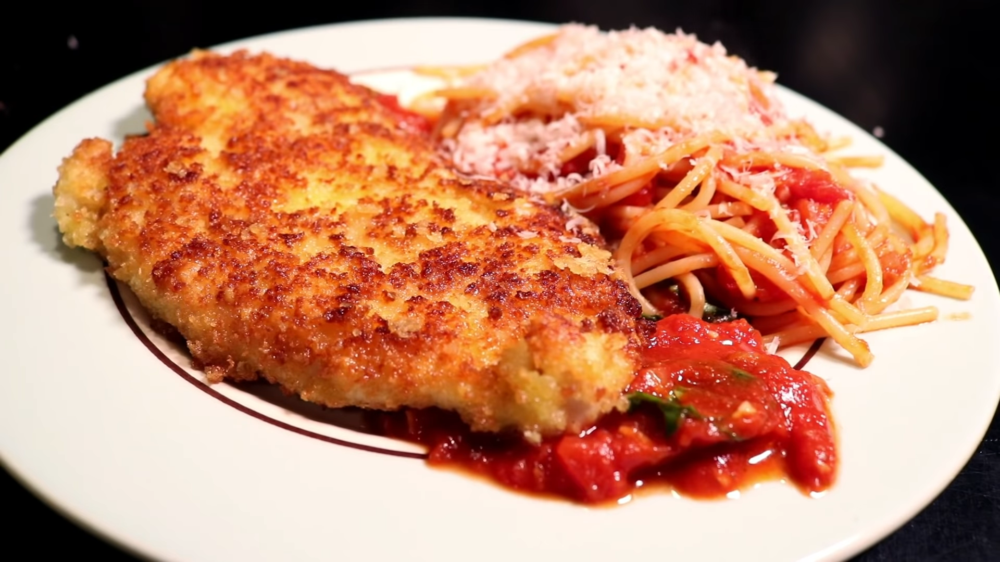

Adam Ragusea's Crispy Chicken Parmesan

Description
An appetizing chicken parmesan recipe by popular youtuber Adam Ragusea.
It uses panko breading and fried pecorino cheese. Since I live in Japan, it sounds like a great recipe to try while I'm living here.
Ingredients
- Two chicken breasts
- Glug of white wine
- Salt
- Pepper
- Olive oil
- Four cloves of garlic, chopped
- One shallot, chopped
- Two tablespoons of tomato paste
- One 28-ounce can of crushed tomatoes
- Handful of flour
- One egg, beaten
- Two cups of Panko
- Grated Parmesan or pecorino cheese
- Half-pound of spaghetti
- Fresh basil leaves, torn
Steps
-
Cut the chicken breasts to half their original thickness, yielding four equal pieces. Pound them out on both
sides, ideally with a spiked meat mallet. Season both sides liberally with salt and pepper. Put the chicken in a
bowl with some of the chopped garlic and just enough white wine to coat. Toss and refrigerate.
-
For the tomato sauce, fry the shallots and the remaining garlic in olive oil until soft. Put in the tomato paste
and fry briefly, then the canned tomatoes and a glug of white wine. Reduce heat to a simmer, and cook for about
30 minutes, stirring frequently to keep it from burning.
-
When the sauce is about ready, prepare to bread the chicken by putting the flour and breadcrumbs onto separate
plates and the beaten egg in a bowl. Grate a large pile of cheese onto the breadcrumbs and toss to mix it in.
Dry the marinade off the chicken on paper towels.
-
Put a pot of salted water on the boil for the spaghetti.
-
Coat each piece of chicken in flour, then egg, then breadcrumbs/cheese.
-
Pour a heavy coating of olive oil into a wide pan on medium heat. Fry the chicken gently, two pieces at a time,
until golden on both sides and the internal temperature reads 160 F — 6-8 minutes. Remove cooked chicken to a
cooling rack. You’ll probably need to add more olive oil for the second batch.
-
Start the spaghetti cooking when you start frying the second batch of chicken, and drain it when finished.
-
Add basil to the tomato sauce, pour some sauce into the drained spaghetti and toss. Divide spaghetti onto four
serving plates and top with grated cheese. Place a few dollops of sauce around the outside of each plate and
place the chicken pieces. Dip each bite of chicken into the sauce as you eat.
Return to top